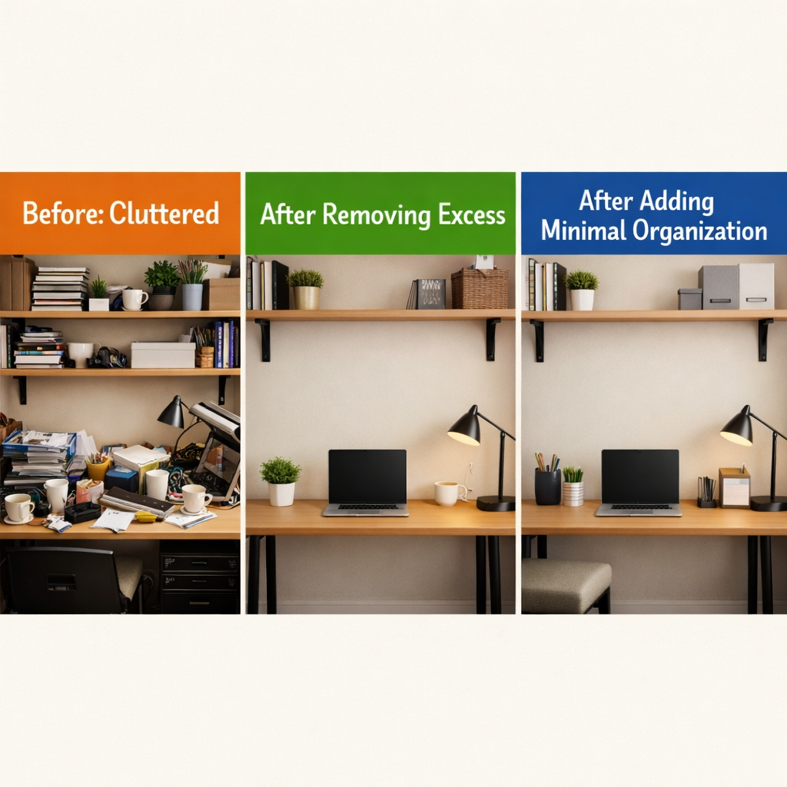

Introduction: Why So Many People Feel Overwhelmed Indoors Right Now
Something shifts in late January.
The New Year motivation fades. The plans you made feel distant. And suddenly, you're spending more time indoors than ever—working from home, studying at your desk, navigating shorter days and longer nights.
Your space, which felt manageable in December, now feels heavy.
The clutter you've been ignoring demands attention. The desk covered in papers and random items. The bedroom nightstand piled with things that don't belong. The living room where everything seems to accumulate because there's nowhere else to put it.
This isn't about having a messy home. This is about visual noise creating mental fatigue.
Every item you see—even peripherally—requires a tiny bit of cognitive attention. Your brain subconsciously processes it, categorizes it, decides whether it needs action. Multiply that by dozens or hundreds of visible objects, and you're carrying a constant low-grade mental load without realizing it.
Winter makes this worse. Less daylight means more artificial lighting, which makes clutter more visible. More time indoors means you can't escape the chaos by going outside. The space that should restore you is draining you instead.
Here's what matters: this isn't permanent, and you don't need a complete home renovation to fix it.
Small, intentional changes to how your most-used spaces are organized can reduce daily stress, improve focus, and create the mental clarity you're missing. Not through aesthetics or trends—through function and intentionality.
Let's address the spaces causing the most overwhelm right now.

What Minimalism Actually Means (And What It Does NOT Mean)
Before we go further, let's clear something up: minimalism is not about empty white rooms or expensive designer furniture.
It's not about deprivation. It's not about getting rid of things you genuinely use and love. It's not a performance for social media.
Minimalism, in the context of creating functional living and working spaces, means:
- Intentional placement. Every item has a designated home. You know where things are, and putting them away is effortless.
- Fewer visual distractions. Surfaces aren't covered with items competing for your attention. Your eyes (and brain) can rest.
- Function over excess. You keep what serves a purpose. You remove what doesn't. The goal is usefulness, not emptiness.
This approach works in small apartments, shared homes, rented spaces, and any environment where you don't have unlimited room or budget. You don't need more space—you need better systems for the space you have.
The difference between a cluttered desk and a functional one isn't square footage. It's whether the items on that desk have a reason to be there and a place to belong.
Minimalist home and office decor is simply the practice of removing unnecessary visual complexity so you can focus on what actually matters: your work, your rest, your daily function.
That's it. No philosophy degree required.
How Visual Clutter Affects Daily Focus
Here's what happens when your environment is visually cluttered:
Your workspace has papers, cords, random supplies, old coffee cups, things you meant to deal with "later." Every time you sit down to work, your brain scans the scene. It registers each item. Unfinished tasks. Decisions waiting. Things out of place.
This creates a constant background hum of mental effort—even when you're trying to concentrate on something else.
The same happens in your bedroom. A nightstand piled with books, chargers, receipts, hair ties, half-empty water bottles. Your brain processes all of it. Even in the dark, knowing it's there affects your ability to mentally disconnect and rest.
Your living room becomes the catch-all for everything without a home. Mail, bags, shoes, blankets, remotes. Walking into that space doesn't offer relief—it reminds you of more things to organize, more decisions to make.
This isn't about being sensitive or particular. This is how human attention works.
Visual complexity demands cognitive resources. When your environment is chaotic, your mind can't fully settle. You feel scattered because your surroundings are scattered.
Work-from-home setups make this worse. Your desk is no longer just a workspace—it's also where you eat lunch, pay bills, browse your phone, pile things temporarily. The boundary between "work mode" and "rest mode" dissolves when the physical space serves too many conflicting purposes.
Bedrooms lose their calming function when they become storage rooms, home offices, exercise spaces, and entertainment centers simultaneously.
The solution isn't buying more storage to hide more stuff. The solution is reducing what's competing for your attention in the first place—then organizing what remains so it supports your daily function instead of fighting against it.
Minimalist Reset for the 3 Most Stressful Areas
You don't need to transform your entire home this weekend. You need to address the three spaces causing the most daily stress: your desk, your bedroom, and your living area.
Let's create calm, one space at a time.
The Desk: Reclaiming Your Work and Study Area
Your desk should support focus, not sabotage it.
Right now, if your desk is like most work-from-home setups, it's doing the opposite. Cords tangled everywhere. Supplies scattered across the surface. Papers stacked in precarious piles. Random items that migrated there and never left.
Every morning, you sit down to work and face chaos before you even open your laptop.
The Minimalist Desk Principle:
Only daily-use items belong on your desk surface. Everything else gets stored out of sight or removed entirely.
This doesn't mean hiding everything in drawers and creating a sterile workspace. It means being honest about what you actually use every single day versus what's just taking up visual space.
Step 1: Clear Everything Off
Remove every item from your desk. Yes, everything. You need to see what you're working with.
Step 2: Put Back Only What You Use Daily
Your computer. Your notebook or planner. One pen (maybe two). Your water bottle or coffee mug. A lamp if needed.
That's typically it. Most other things can be stored nearby but off the primary work surface.
Step 3: Create Homes for Everything Else
This is where intentional organization matters. Items you use regularly but not daily—chargers, headphones, extra supplies—need designated storage that's accessible but not visible.
🗂️ Essential Desk Organization
A simple desk organizer with hidden compartments in wooden or metal design keeps pens, sticky notes, and small supplies contained in one spot instead of scattered across your desk. Choose neutral materials like wood or metal that don't add visual noise.
Shop Desk Organizer →🔌 Cable Management Solutions
Cord chaos is one of the biggest desk stressors. Cable management boxes or clips gather loose cords, hide power strips, and create clean lines instead of tangled messes. The visual difference is immediate.
Get Cable Management →📄 Paper Organization System
If you work with papers, they need a designated spot—not loose piles. A simple vertical file holder or desktop tray creates a system: handle immediately, file in one spot, or recycle. No more piles reproducing mysteriously.
Shop Document Holder →💻 Monitor Riser with Storage
If you use an external monitor, elevating it to eye level improves ergonomics while creating storage space underneath for notebooks, a keyboard when not in use, or other flat items. Check out this monitor riser with built-in storage.
View Monitor Riser →Step 4: Choose Neutral Colors
Visual calm comes partly from color simplicity. Choose desk accessories in neutral tones—wood, black, white, gray, beige. Avoid bright colors or busy patterns that demand attention.
Your desk should fade into the background. The work you're doing is what deserves focus, not the desk itself.
✨ The Result:
A workspace that supports concentration instead of scattering it. Clear surfaces. Hidden cords. Everything you need within reach, but nothing extra competing for your attention.
Bedroom: Restoring Your Mental Reset Zone
Your bedroom has one primary job: help you rest.
When it's cluttered, it fails at that job.
Walk into your bedroom right now and look at what you see. Is the nightstand covered with items? Are there piles of clothes on chairs? Things stored on the floor because there's nowhere else?
Every visible item registers in your brain, even when you're trying to sleep. That stack of books you meant to read. The laundry you meant to fold. The charging cables sprawled across surfaces.
Visual clutter in your bedroom creates mental clutter when you need mental quiet most.
The Minimalist Bedroom Principle:
Clear surfaces. Soft lighting. Storage instead of surface clutter.
Your bedroom doesn't need to be empty—it needs to be intentional. Keep only what directly supports rest and morning routines visible. Everything else gets stored or relocated.
Step 1: Clear Your Nightstand
Your nightstand should hold: a lamp, possibly a book you're currently reading, maybe a glass of water. That's it.
Not seven books you might read someday. Not receipts and random papers. Not five chargers for devices you're not using. Not old tissues, hair ties, and miscellaneous items that accumulated over weeks.
🧺 Bedside Storage Solutions
If you need to keep items near your bed—extra chargers, medications, a notebook—use a simple bedside storage basket in neutral tones like beige, gray, or natural fiber. Everything's accessible but contained in one spot instead of scattered across surfaces.
Get Bedside Basket →Step 2: Fix Your Lighting
Harsh overhead lights work against rest. Your bedroom needs soft, warm lighting that signals to your body it's time to wind down.
💡 Warm Bedside Lighting
A simple bedside lamp with warm light (2700K-3000K) creates the right environment for evening relaxation. Choose a lamp with clean lines and neutral colors—simple designs that don't demand visual attention.
Shop Bedside Lamp →Step 3: Address Floor Clutter
Items on the floor make rooms feel smaller and more chaotic. Shoes, bags, clothes, random objects—they all need homes that aren't the floor.
📦 Under-Bed Storage
Under-bed storage is unused space in most bedrooms. Low-profile bins slide underneath and hold seasonal clothes, extra bedding, or items you use occasionally but don't need daily access to.
Get Storage Bins →📚 Simple Wall Shelves
If you need additional storage for books or items you want visible, simple wall shelves with clean design and no decorative elements keep things off surfaces and the floor.
Shop Wall Shelves →Step 4: One Clear Surface Rule
Keep at least one surface in your bedroom completely clear. The dresser top. The desk if you have one. A chair.
That clear surface is a visual signal to your brain: there's space here. There's calm. Not everything demands action.
✨ The Result:
A bedroom that actually supports rest. Clear nightstands. Soft lighting. Items stored intentionally instead of scattered randomly. The mental weight lifts when you walk into a room that isn't asking anything of you.

Living Space: Creating Order in Shared Stress Areas
Your living room, entryway, or shared common space becomes the dumping ground.
Mail lands there. Bags get dropped there. Shoes accumulate. Blankets pile up. Remote controls multiply. Things migrate there from other rooms and never leave.
This space was supposed to be where you relax, but instead it's a constant reminder of things to deal with.
The challenge: living spaces serve multiple purposes and multiple people (even if it's just you in different moods). They need to be functional without requiring constant active organizing.
The Minimalist Living Space Principle:
Create designated homes for common items so putting things away is easier than leaving them out.
You're not trying to maintain a magazine-perfect room. You're creating systems that work with your actual daily habits instead of against them.
Step 1: Address the "Dropping Points"
Where do things naturally land when you walk in the door? That's your dropping point. Instead of fighting it, organize it.
🚪 Entryway Organization
A simple entryway organizer with hooks, shelf, or bench with storage creates designated spots for the items that otherwise end up everywhere—bags, coats, keys, and mail.
Shop Entryway Organizer →Step 2: Contain the Chaos
Living rooms accumulate small items: remotes, chargers, reading materials, blankets, random things that don't have homes.
🛋️ Storage Ottoman
A storage ottoman with neutral fabric and functional design does double duty: seating or footrest on the outside, hidden storage on the inside. Throw blankets, remotes, magazines—they all disappear when not in use but stay accessible.
Get Storage Ottoman →🧺 Neutral Storage Bins
Simple bins in neutral tones like beige, gray, or natural materials can sit on shelves or under side tables. Designate one for remotes and chargers, one for current reading materials, one for items that belong in other rooms but haven't made it there yet.
The key: the bins themselves shouldn't be visually loud. Choose simple materials and colors that blend into your space.
Shop Storage Bins →Step 3: Vertical Storage Solutions
Floor space in living areas disappears quickly. Use walls.
🪝 Simple Wall Hooks
Wall hooks that are simple, non-decorative, and functional near the door or in high-traffic areas give bags, coats, and frequently used items a home that isn't the floor or furniture.
Get Wall Hooks →Step 4: The "One In, One Out" System
Living spaces stay manageable when you adopt one simple rule: when something new enters the space, something old leaves.
New throw pillow? Old one gets donated. New magazine? Recycle last month's. New item you brought home? Find what it's replacing or where it truly belongs.
This isn't about deprivation—it's about maintaining equilibrium so clutter doesn't silently accumulate again.
✨ The Result:
A living space that stays organized without constant effort. Items have homes. Surfaces stay clear. The room actually supports relaxation instead of creating more mental work.
Minimalism That Respects Values and Intentional Living
Here's something important that often gets lost in conversations about minimalism and decluttering:
This isn't about consuming more to achieve less.
The entire point is reducing excess. Buying seventeen organizing products to store things you don't actually need defeats the purpose.
Before adding any storage or organizational items to your space, remove first.
Get rid of duplicates. Discard what's broken. Donate what you haven't used in a year. Recycle what's outlived its usefulness.
Only then—after you've honestly assessed what remains—do you add organizational solutions for the items you're keeping.
Choose Durability Over Trends
When you do purchase organizational items or furniture, choose quality that lasts.
A well-made wooden desk organizer will serve you for decades. A cheap plastic one will break within months and end up in a landfill.
Natural materials—wood, metal, cotton, linen—age better than synthetic alternatives. They're often more expensive initially but cost less over time because they don't need replacing.
This aligns with sustainable living and responsible consumption. You're not buying less because you can't afford more—you're buying less because you respect resources and want what you own to serve you well.
Function First, Always
Every item you add to your space should have a clear function.
A storage basket holds specific items that previously scattered across surfaces.
A cable organizer eliminates cord chaos that was making your desk feel messy.
A lamp provides the warm lighting your bedroom needs for rest.
If something doesn't solve a specific, current problem in your space, you don't need it—regardless of how minimalist or aesthetic it looks.
This approach naturally prevents overconsumption while creating genuinely functional spaces.
How to Start Without Overbuying
The mistake most people make: seeing the vision of a calm, organized space and immediately shopping for all the storage containers, organizers, and furniture to achieve it.
Then they end up with organizational products they don't actually need, creating new clutter instead of solving the old.
Here's the better approach:
Remove First, Then Add Only If Necessary
Start by removing what doesn't belong. This costs nothing and often solves 70% of the visual chaos immediately.
Clear your desk of non-essential items. Remove clutter from your nightstand. Take things out of your living room that belong elsewhere.
Live with those spaces clear for a few days. Notice what you actually miss. Notice what problems remain.
Only then do you know what organizational solutions you genuinely need.
Maybe you realize you don't need a fancy desk organizer—you just needed to put away the supplies you weren't using daily.
Maybe your bedroom feels calm enough with a clear nightstand and better lighting, no additional storage required.
Maybe your living room only needs one basket for remotes, not an entire organizational overhaul.
One Area at a Time
Don't try to reset your entire home in a weekend. Burnout happens, progress stops, and clutter returns.
Choose one space. This week, focus only on your desk. Get it functional. Build the habit of maintaining it clear.
Next week, address your bedroom. Then your living space.
Slow progress that sticks beats fast progress that collapses.
Focus on Function, Not Perfection
Your goal isn't creating a space that looks like a design blog. Your goal is creating a space that supports your daily life without draining your mental energy.
Clear surfaces don't have to be empty. Organized areas don't have to match perfectly. Functional storage doesn't have to be expensive.
Good enough to reduce stress and improve focus is genuinely good enough.
Conclusion: A Calmer Space Is a Practical Choice
You don't need to believe minimalism will change your life or make you happy.
You just need to recognize that visual clutter creates mental clutter, and reducing one naturally reduces the other.
Clear desk surfaces make it easier to start work without distraction.
Clear bedroom surfaces make it easier to mentally disconnect and rest.
Clear living spaces make it easier to relax without subconscious reminders of tasks waiting.
This is practical, not philosophical.
When the spaces where you spend the most time—especially during winter months when you're indoors more—work with you instead of against you, daily function improves. Stress decreases. Focus comes easier.
Small changes compound. One organized desk creates momentum for one organized bedroom. One clear surface becomes two, then three.
You don't need a perfect home. You need a functional one that doesn't exhaust you just by existing.
That's achievable this week. One space. One honest assessment of what stays and what goes. One intentional choice about how to organize what remains.
Start where the overwhelm is greatest. Start small. Start now.
🎯 Your Winter Reset Action Plan
- Choose ONE space to start: desk, bedroom, or living room
- Remove everything that doesn't serve a daily function
- Identify what organizational tools you actually need (not want)
- Implement one storage solution at a time
- Build a 2-minute daily reset habit
- Evaluate after one week—what's working?
- Expand to the next space only when the first feels sustainable
DISCLOSURE: This post contains affiliate links to organizational and storage products we recommend for creating functional, minimalist spaces. We may earn a small commission if you make a purchase through our links, at no additional cost to you. We only recommend items that serve clear organizational purposes and align with reducing clutter, not adding to it. Your support helps us continue creating helpful content on sustainable and intentional living.